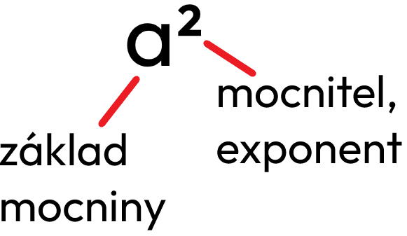

Druhá mocnina čísla je základní matematická operace, která spočívá v násobení čísla samo sebou. Tento pojem je užitečný v různých oblastech, jako je geometrie nebo výpočty plochy čtverce. Druhá mocnina se často používá při řešení úloh a výpočtech souvisejících s kvadratickými funkcemi. Pomůže vám lépe pochopit principy mnoha matematických konceptů.
a × a = a² - „á na druhou“

mocnitel - kolikrát násobím číslo samo sebou
základ - číslo, které
umocňuji
Druhá mocnina nemůže být záporná.
(-7)² = -7 × (-7) = 49
Pozor!
(-2)² ≠ -2²
(a + b)² = a² + 2ab + b²
8000²
8000² = 64 000 000
0,06²
0,06² = 0,0036
1,3²
1,3² = 1,69